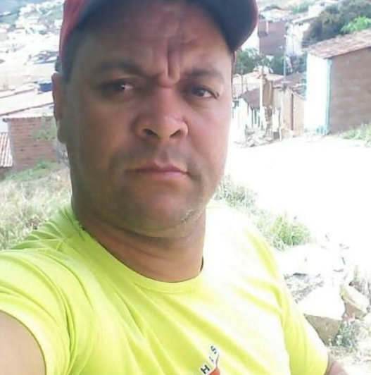
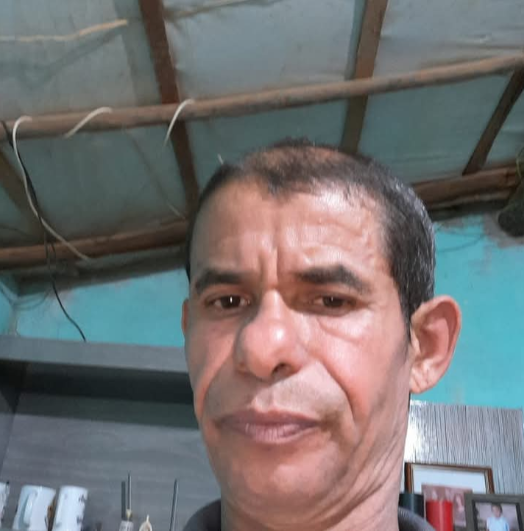

Quais métodos você já utilizou para tratar a Disfunção Erétil?
☑️ Você pode marcar mais de uma opção
📋 Montando Seu Protocolo
Qual é o seu peso?
80kg
50 kg150 kg
👆 Arraste a barra para selecionar seu peso exato
📋 Montando Seu Protocolo
Qual é a sua altura?
170cm
150 cm210 cm
👆 Arraste a barra para selecionar sua altura exata
📋 Montando Seu Protocolo
Há quanto tempo você enfrenta dificuldades em ter uma ereção?
📊 Resultados Reais
12.548 homens acima dos 40 já transformaram sua vida sexual com o protocolo do Truque da Laranja.
92% dos participantes relataram ereções fortes e duradouras nos primeiros 7 dias de tratamento, sem recorrer a remédios.

Roberto M., 54 anos — Curitiba/PR
★★★★★
"Achei que era coisa da idade e num tinha mais jeito. Depois de 5 dias seguindo o protocolo minha ereção voltou a ser firme igual quando eu tinha 15 anos. Senti que meu pau aumentou uns 3cm de tamanho e ficou mais grosso. Obrigado"

Marcelo F., 47 anos — São Paulo/SP
★★★★★
"Joguei o tadala fora agora so tomo essa bebida todo dia e fico com o negocio duro toda hora"
Em qual dessas situações você se encontra hoje?
🏥 Histórico de Saúde
Você tem alguma dessas condições de saúde?
Essas condições afetam a circulação e precisam ser consideradas no seu protocolo para garantir segurança e eficácia.
☑️ Você pode marcar mais de uma opção
🚬 Hábitos do Dia a Dia
Você pratica algum desses hábitos com frequência?
Sem julgamento — são informações importantes para calibrar o protocolo corretamente.
☑️ Você pode marcar mais de uma opção
📐 Personalização Avançada
Quantos cm você quer aumentar no seu pênis?
⏱️ Desempenho Sexual
Quanto tempo você consegue durar durante a relação?
O protocolo também atua no controle da ejaculação. Precisamos saber sua situação atual nesse ponto.
🔥 Nível de Libido
Como está o seu desejo sexual atualmente?
A libido está ligada diretamente à testosterona. Essa informação torna a calibração do protocolo ainda mais precisa.
Quando sua parceira quer se aproximar de você...
Quando a ereção falha no momento H...
No fundo, o que mais te preocupa com tudo isso?
✅ Protocolo Pronto!
Um resumo rápido:
🍊 O Truque da Laranja reacende a produção do óxido nítrico — a substância que abre as veias e manda sangue para o pênis. A mistura certa, nas dosagens exatas, vai trazer de volta as ereções fortes e duradouras que você sempre teve!
Você entendeu por que o Truque da Laranja é tão eficaz para acabar com a Disfunção Erétil?
🎯 Protocolo Exclusivo
⚠️ Atenção: Ao contrário dos métodos de farmácia, o Truque da Laranja é um protocolo 100% natural e preparado especificamente para VOCÊ!
Você se compromete a seguir o Protocolo por 7 dias e ver seu pau ficar duro de forma totalmente natural novamente?
⚠️
IMPORTANTE: o número de protocolos preparados é limitado, então iremos fornecer apenas para homens realmente comprometidos com sua saúde sexual.
🏁 Confirmação Final
Você está pronto para começar o seu protocolo ainda hoje?
⚡ Seu corpo já tem tudo que precisa. O Truque da Laranja apenas reativa o que estava adormecido.
Não saia agora! Seu Truque da Laranja está quase pronto!
Assista ao vídeo abaixo para receber:
⬆️ Assista ao vídeo acima enquanto preparamos o seu protocolo personalizado do Truque da Laranja
Lendo suas respostas...
Você vai receber seu protocolo em:2:00
🎉 Parabéns, seu protocolo está pronto. Termine de assistir ao vídeo para receber.